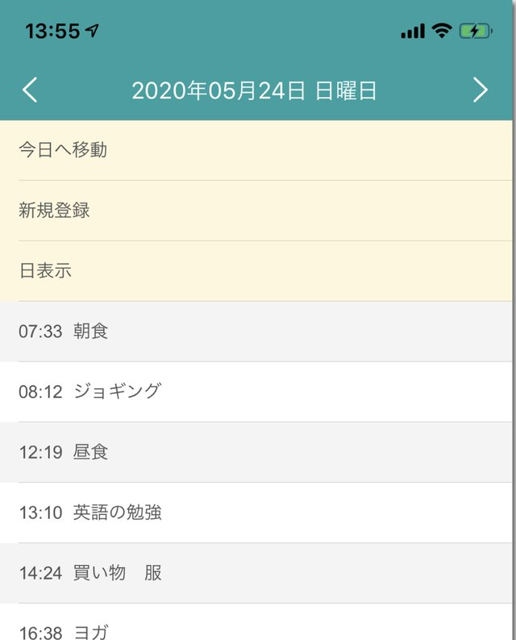

簡単に時間とメモ記録アプリ
簡単に時間とメモ記録アプリシンプルだから続きやすい
シンプルだからたくさん記録できる

時間記録このアプリを作ってから
こんなユーザーさんから声をかけてもらいました
時間の使い方をみなおしてる人
病気の状態、薬を飲んだ記録(ペットも)している人
アメリカ人記者、ドイツ人も(英語で話しかけてきてくれました、あせる!)
時間記録って色んな使い方している人
いるんだなって...
おかげさまで大人気の時間記録アプリです!
7,255インストール(2020年9月で)
アプリのお問い合わせでユーザーさんから応援のメッセージを頂くことが多くなってきて、使ってる人増えたんだなって感じてます。ありがとうございます!嬉しいです!
海外のユーザーさんも多くて
...などなど。英語でメッセージを送ってくることもあるので、頑張って英語でメッセージのやり取りしてます。
アプリで時間管理される方が多いです
ユーザーさんからよく聞くのが
- 自分の時間管理を見直したい(時間管理ツールとして)
- 病気の症状の記録・薬を飲んだ記録をつけたい
…などなどで、もちろん他にも色々な用途でみなさんアプリを使っているみたいです。
アプリのレビュー欄などをみると、他の方がどんな使い方をされているかの参考になるので、見てみるのをおすすめします。開発者の私もこんな使い方してるんだと感心させられることが多いです。
もしよかったらレビューであなたのアプリの使い方を教えてくれると嬉しいです。開発者としてはユーザーさんがどんなふうにアプリを使っているのか、はとても気になるものなのです。
ちなみに「画面を開いてすぐに記録したい!」というシンプルさがほしい人にはとてもおすすめできるアプリですが、多機能さを求めるのであれば他のアプリがいいかもしれません。一度使ってみてあってないな、と感じたら他のアプリも試して自分にあったアプリを探すのがよいと思います。